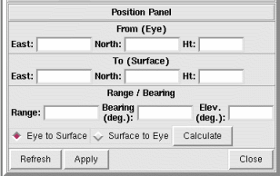

NVIZ Reference Manual
CONTENTS
Position Panel
The Position panel lets you manually control the
From (eye) position and the To (surface)
position. You can manually enter coordinates or calculate coordinates
based upon a range, bearing, and elevation.
-

OPTIONS
- From (eye)
- Enter coordinates in GRASS database units for the
From (eye) position.
- East
- Enter the easting of the eye position.
- North
- Enter the northing of the eye position.
- Ht
- Enter the height (elevation) of the eye position.
- To (surface)
- Enter coordinates in GRASS database units for the
To (surface) position.
- East
- Enter the easting of the surface position.
- North
- Enter the northing of the surface position.
- Ht
- Enter the height (elevation) of the surface position.
- Range/Bearing
- Calculates either a new From or To
position based upon a Range, Bearing, and
Elevation.
- Range
- Enter the range (distance) between the eye and surface positions.
- Bearing
- Enter the bearing (in degrees) between the eye and surface
positions.
- Elev
- Enter the elevation (in degrees) between the eye and surface
positions.
- Eye to Surface
- Uses the Range, Bearing, and
Elevation values to calculate a new To
position. The From position remains unchanged.
NOTE: Use this option with caution, because it is possible
to move the surface completely out of view.
- Surface to Eye
- Uses the Range, Bearing, and
Elevation values to calculate a new From
position. The To position remains unchanged.
- Apply
- Calculates either the new From or To
position (depending on the selected option) and updates coordinates
accordingly.
- Refresh
- Gets the current From and To
positions from the Movement panel.
- Apply
- Applies the edited From and To
positions to the current view. The Movement panel updates
to the new position.
- Close
- Closes the Position panel.